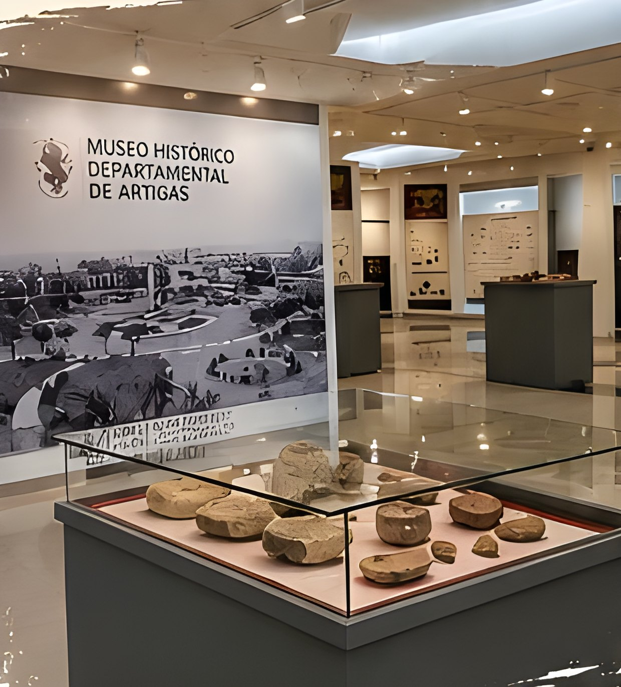
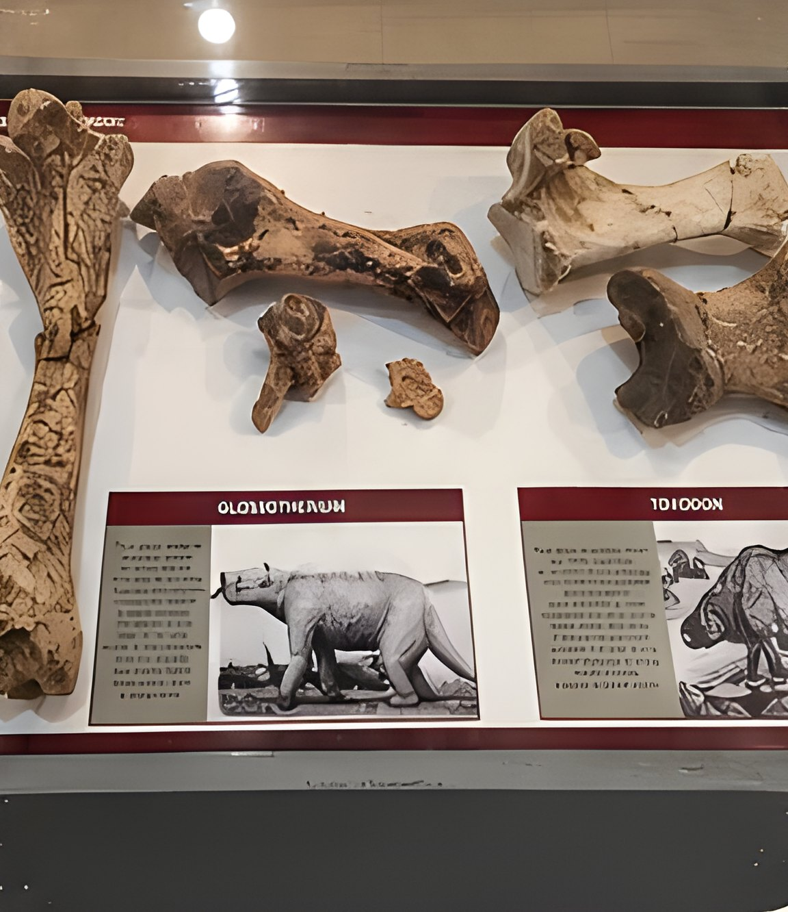
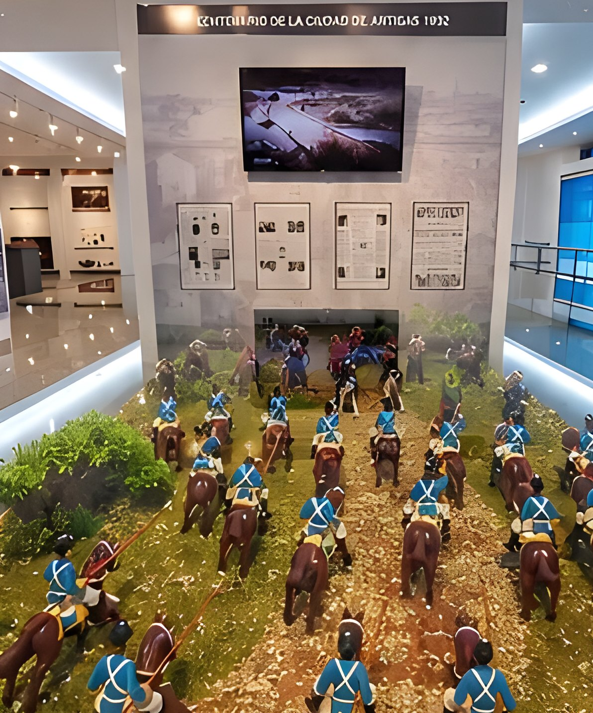

Un viaje por nuestra historia
El museo depende de la Intendencia de Artigas, a través de la Dirección de Cultura, Turismo y Deporte. Sus salas recorren la historia, la arqueología y la paleontología del departamento, con exposiciones permanentes y temporales.
Qué vas a encontrar
- Paleontología: restos de la megafauna del Pleistoceno, como el Glossotherium y el Toxodon.
- Historia y arqueología: objetos y documentos que cuentan el proceso histórico y cultural del departamento.
- Muestras de arte: exposiciones temporales de artistas locales y nacionales, como Carlos Páez Vilaró.
- Charlas y visitas guiadas, por ejemplo en el Día del Patrimonio.
Abierto a todos
La entrada es gratuita y el edificio tiene rampas de acceso.
Fotos

Foto: Lámina informativa del museo

Foto: Lámina informativa del museo

Foto: Lámina informativa del museo